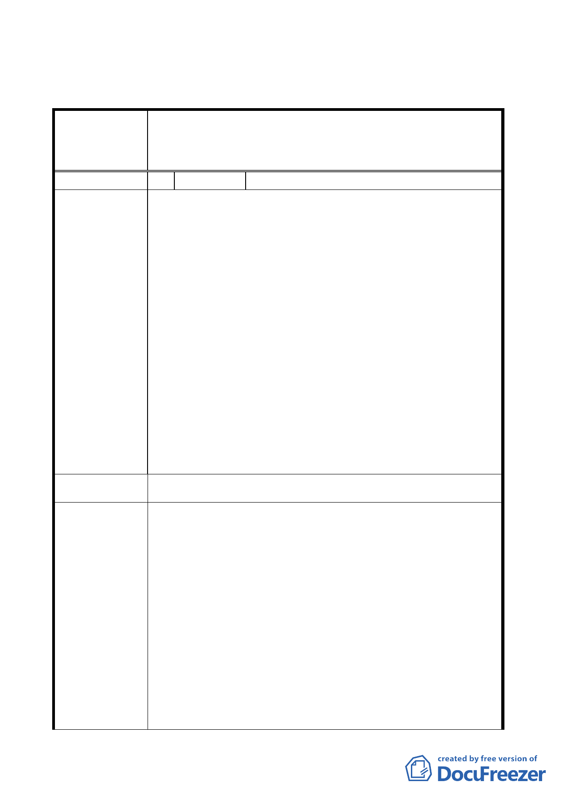

二、公民或團體所提意見審決如後附綜理表。
臺北市都市計畫委員會公民或團體所提意見綜理表
案名
編號
陳情理由
變更臺北市大安區辛亥段五小段138-2、138-6、139、140-1、
140-2、140-3 地號等6筆土地保護區為殯儀館用地主要計畫
案
1 陳情人
市民朋友 君(市長信箱)
1. 依公展報告書內容，變更法源為都市計畫法第 27 條第一
項第四款，惟報告書中均未見相關政策或書面附件資料可
資佐證，本案是否得援用該法條辦理個案變更應先釐清。
2. 依報告書內容均未敘明北市民政局辦理本案變更後，該變
更範圍內之土地所欲進行之土地利用方式，然就主要計畫
變更圖之地形資料，部分地區現況已有 4 公尺明顯落差
（17.7 公尺與 21.7 公尺），且等高線密集處，其高差亦從
21.7 公尺約 33.7 公尺，坡度似已超過 30%（或達 30%），
實不宜進行各項變更地形之工程，且坡度具有連續性，未
來，計畫範圍內之地形改變，恐難確保不對周邊坡地造成
衝擊，故本案是否予以變更或調整變更範圍，鑑請 委員
應考量地形因素及變更後之開發行為，以避免對山坡地之
破壞及不必要之公帑支出。
PS:回函以紙本回覆寄至台北郵政 95 之 98 號信箱，並告知錄
案之人陳意見編號。
建議辦法
市府回覆意見
一、第二殯儀館為本市主要治喪服務設施，迭獲市民反應建
築物外觀老舊時有龜裂漏水情形，為提供第二殯儀館館
區用地治喪服務使用空間優質化，以滿足本市治喪服務
需求，爰辦理館區整建規劃，應符合都市計畫法第 27
條第 1 項第 4 款所述配合本市興建重大設施而辦理之都
市計畫變更。
二、本案為利基地完整及整體規劃，將該 6 筆土地（含大安
區辛亥段 5 小段 139 地號私有土地）變更為為殯儀館用
地，有關徵收及辦理都市計畫變更案業經 100 年 4 月 20
日簽奉 市長同意。
三、本案變更用地，因第二殯儀館腹地有限，為能有效運用
周邊土地，作為交通通道、車位及邊坡擋土牆綠美化之
- 12 -